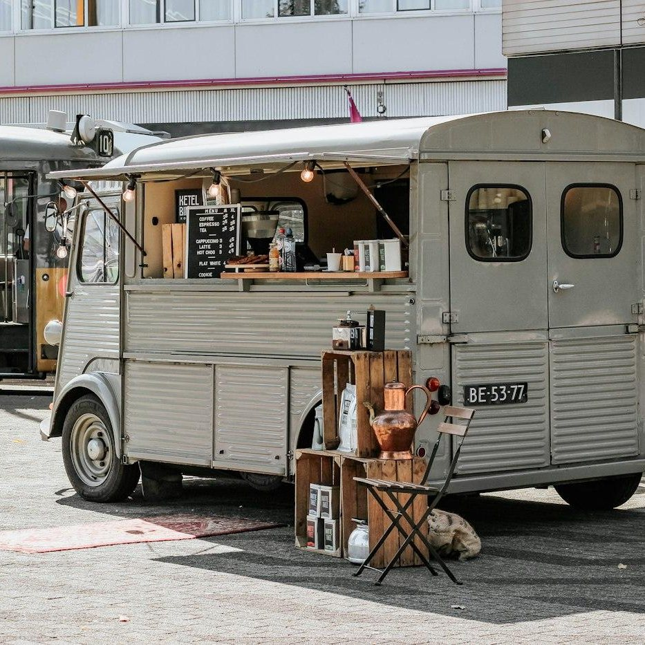

Where the truck is parked this week

People ask us where we are every single day, so here is how the week works. Monday is South Congress for lunch, Tuesday and Thursday are evenings on Rainey Street and East 6th, and Wednesday is the Domain at lunchtime.
Friday is Barton Springs, a long afternoon by the pool with the park lot as our dining room. Saturday is our flagship downtown stop with the full menu, and Sunday is the Eastside Sunday Market in limited quantities.
Plans change with weather and permits, so the Schedule page and our Instagram are always the last word. If you are not sure, send us a message and a member of the crew will tell you where we are.